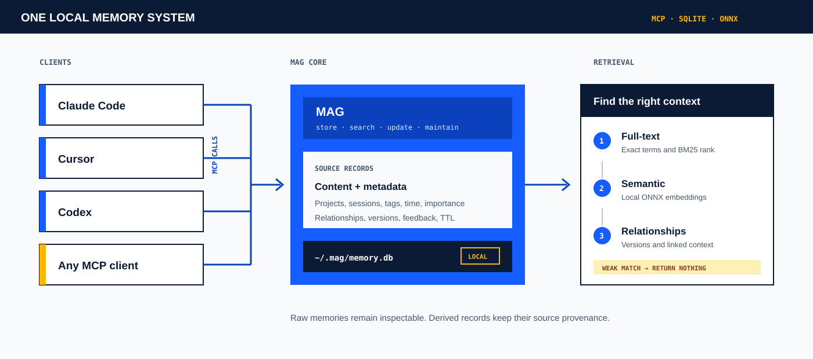
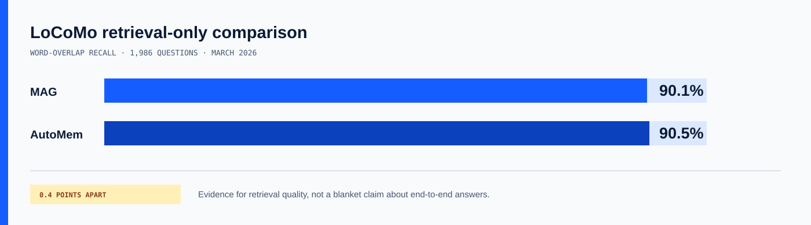

Useful, but captive.
Context saved in one assistant does not automatically follow you to another.
Local-first memory for MCP clients
MAG gives your configured AI tools one shared, local memory for decisions, fixes and handoffs. One Rust binary. One SQLite file. No MAG account.
$ curl -fsSL https://raw.githubusercontent.com/George-RD/mag/main/install.sh | shTested primarily on macOS and Linux. The first semantic query downloads the local embedding model.
Built-in memory stays inside one product. Notes require the agent to know where to look. A raw vector database still needs a memory model, retrieval rules and an MCP surface.
Context saved in one assistant does not automatically follow you to another.
Files work when the right instruction loads the right file at the right moment.
Similarity search is only one part of memory lifecycle, provenance and maintenance.
MCP clients call MAG. MAG preserves the source record in SQLite, then combines exact text, local semantic matching and linked context. Weak matches can return nothing.

The public benchmark is useful evidence for retrieval. It is not a promise that every workload or end-to-end generated answer will score the same.

Measured across 1,986 questions on 28 March 2026. AutoMem reports 90.5% under a similar retrieval-only word-overlap method.
Dataset, command, commit, category results and limitations are documented in the repository.No dates are promised. Each phase is blocked until the evidence and architecture beneath it are good enough.
Audit live callers, dead code and competing composition paths. Choose one root before adding more behaviour.
Version the test set and measure extraction, retrieval, reranking, latency, RAM and offline success.
Use LFM2.5 1.2B through the selected production path with explicit fallback and observable failure.
Test facts, relationships, contradictions and summaries without replacing raw memories.
Reuse the same contracts for authentication, sync and tenancy while keeping local mode independent.
You use more than one MCP client, project decisions matter beyond one session, and local control matters more than managed convenience.
You need managed sync, application-level encryption, an enterprise SLA or a stable long-term public API today.
Install MAG, run setup, then tell your agent which decisions, fixes and handoffs are worth keeping.
$ curl -fsSL https://raw.githubusercontent.com/George-RD/mag/main/install.sh | sh